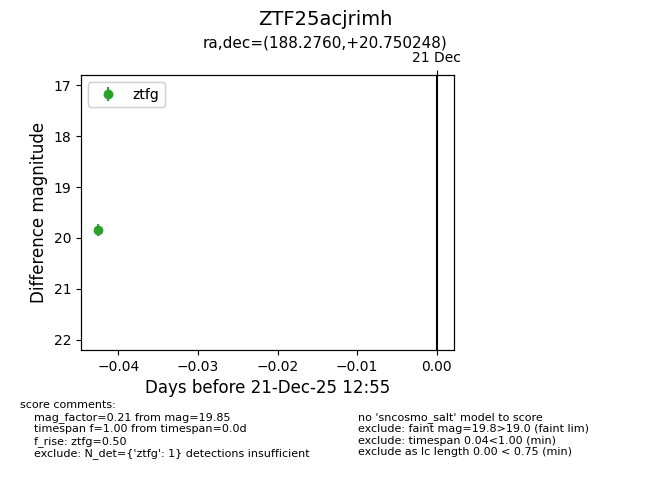
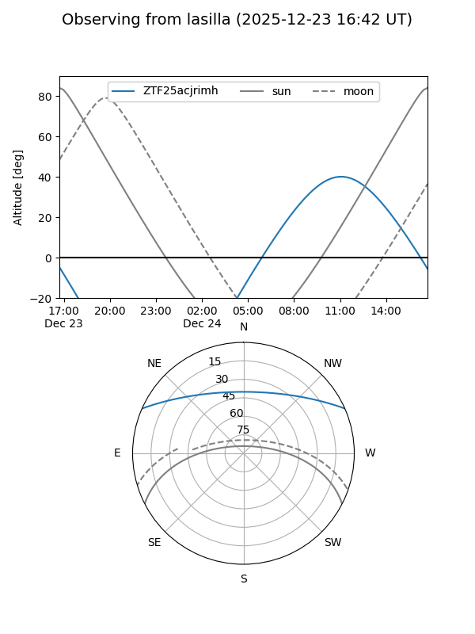
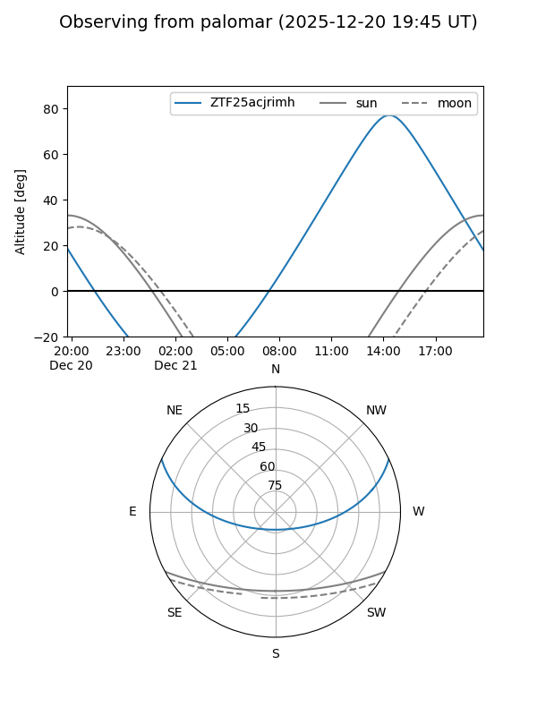
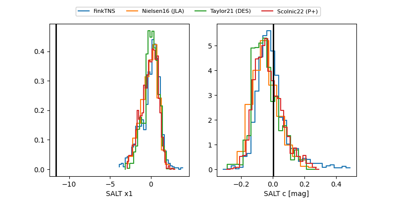

ZTF25acjrimh
Target ZTF25acjrimh at 2025-12-21 12:57
Aliases and brokers:
FINK: fink-portal.org/ZTF25acjrimh
Lasair: lasair-ztf.lsst.ac.uk/objects/ZTF25acjrimh
ALeRCE: alerce.online/object/ZTF25acjrimh
alt names
ZTF25acjrimh (ztf,fink_ztf)
Coordinates:
equatorial (ra, dec) = 188.2760,+20.75025
equatorial (HMS+DMS) = 12:33:06.25,+20:45:00.89
galactic (l, b) = (268.6751,+82.37127)
Flags:
Photometry:
last ztfg=19.85
1 ztfg detections
Lightcurve

Visibility


Additional plots
